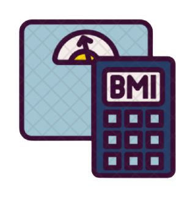

About Us



This page covers healthy eating advice for the general population.
People with special dietary needs or a medical condition should ask their doctor or a registered
dietitian for advice.We believe fitness should be accessible to everyone, everywhere, regardless of
income or access to a gym. With hundreds of professional workouts, healthy recipes and informative
articles, as well as one of the most positive communities on the web, you’ll have everything you need to
reach your personal fitness goals – for free!


 1.png)
 1 (2).png)